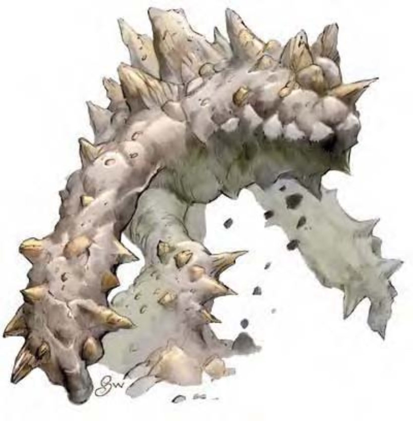

这个生物简直就像座会移动的小山，两条粗大的腿完全由土石构成。随着沉重的步伐，两只棒状的手臂也摇晃着，上面还突出无数参差不齐的尖石。头部完全没有五官，就朝着你的方向直直望去。
土元素力大无穷而且异常顽强，几乎可以把任何东西敲个粉碎。他们很少离开土元素界，除非受到法术召唤。
受召唤而来到物质界时，土元素会由邻近区域的各种泥土、岩石、贵重金属和宝石所构成。
土元素通晓土族语，但几乎很少开口说话。土元素的声音听起来像是隧道深处的回音、地震的低鸣或是石块摩擦的响声。
战斗虽然移动速度不快，土元素还是相当难缠的对手。它可以在坚实的地底或岩石中移动，就像人类在地面行走那么轻松。不过土元素并不会游泳，所以必须涉水而过或直接从地底穿过。当然，土元素可以直接在水下的地面行走，但大部分都尽可能避免这样做。
御土（特异）：只要对手和自己都与地面有接触，土元素的攻击检定和伤害掷骰上获得+1加值。如果对手是飞行生物或水中生物，则土元素在攻击检定和伤害掷骰上遭到-4减值。（这些调整值未列于表格内）。
推撞（特异）：土元素开始进行冲撞时不会引发借机攻击。御土能力所获得的调整值（如上述）可以加在对抗力量检定上。
土行（特异）：除了金属之外，土元素可以在岩石、泥巴或任何成分的土壤中自由行动，就像鱼在水中游泳一样轻松。在土中移动之后并不会留下隧道或洞穴，也不会造成任何震动或波纹让人察觉。若针对土元素正在遁地的区域施展"地动术"，可以把它震退30英尺，而且必须通过强韧检定（DC=15），否则会陷入震慑1轮。
| 资料栏位 | 小型土元素 小型元素（土系、外界） |
| 生命骰 | 2d8+2（11HP） |
| 先攻 | -1 |
| 速度 | 20英尺（4格） |
| 防御等级 | 17（+1体型、-1敏捷、+7天生）、接触10、措手不及17 |
| 基本攻击/擒抱 | +1 / +0 |
| 攻击 | 挥击+5近战（1d6+4） |
| 全力攻击 | 挥击+5近战（1d6+4） |
| 占据/触及 | 5英尺 / 5英尺 |
| 特殊攻击 | 御土、推撞 |
| 特殊能力 | 黑暗视觉60英尺、土行、元素特性 |
| 豁免 | 强韧+4、反射-1、意志+0 |
| 属性 | 力量17、敏捷8、体质13、智力4、感知11、魅力11 |
| 技能 | 聆听+3、侦察+2 |
| 专长 | 猛力攻击 |
| 环境 | 土元素界 |
| 组织 | 单独 |
| 挑战级数 | 1 |
| 宝藏 | 无 |
| 阵营 | 通常绝对中立 |
| 进化 | 3HD（小型） |
| 等级修正值 | ― |
| 资料栏位 | 中型土元素 中型元素（土系、外界） |
| 生命骰 | 4d8+12（30HP） |
| 先攻 | -1 |
| 速度 | 20英尺（4格） |
| 防御等级 | 18（-1敏捷、+9天生）、接触9、措手不及18 |
| 基本攻击/擒抱 | +3 / +8 |
| 攻击 | 挥击+8近战（1d8+7） |
| 全力攻击 | 挥击+8近战（1d8+7） |
| 占据/触及 | 5英尺 / 5英尺 |
| 特殊攻击 | 御土、推撞 |
| 特殊能力 | 黑暗视觉60英尺、土行、元素特性 |
| 豁免 | 强韧+7、反射+0、意志+1 |
| 属性 | 力量21、敏捷8、体质17、智力4、感知11、魅力11 |
| 技能 | 聆听+4、侦察+3 |
| 专长 | 顺势斩、猛力攻击 |
| 环境 | 土元素界 |
| 组织 | 单独 |
| 挑战级数 | 3 |
| 宝藏 | 无 |
| 阵营 | 通常绝对中立 |
| 进化 | 5-7HD（中型） |
| 等级修正值 | ― |
| 资料栏位 | 大型土元素 大型元素（土系、外界） |
| 生命骰 | 8d8+32（68HP） |
| 先攻 | -1 |
| 速度 | 20英尺（4格） |
| 防御等级 | 18（-1体型、-1敏捷、+10天生）、接触8、措手不及18 |
| 基本攻击/擒抱 | +6 / +17 |
| 攻击 | 挥击+12近战（2d8+7） |
| 全力攻击 | 2挥击+12近战（2d8+7） |
| 占据/触及 | 10英尺 / 10英尺 |
| 特殊攻击 | 御土、推撞 |
| 特殊能力 | 伤害减免5/―、土行、黑暗视觉60英尺、元素特性 |
| 豁免 | 强韧+10、反射+1、意志+2 |
| 属性 | 力量25、敏捷8、体质19、智力6、感知11、魅力11 |
| 技能 | 聆听+6、侦察+5 |
| 专长 | 顺势斩、强力顺势斩、猛力攻击 |
| 环境 | 土元素界 |
| 组织 | 单独 |
| 挑战级数 | 5 |
| 宝藏 | 无 |
| 阵营 | 通常绝对中立 |
| 进化 | 9-15HD（大型） |
| 等级修正值 | ― |
| 资料栏位 | 超大型土元素 超大型元素（土系、外界） |
| 生命骰 | 16d8+80（152HP） |
| 先攻 | -1 |
| 速度 | 30英尺（6格） |
| 防御等级 | 18（-2体型、-1敏捷、+11天生）、接触7、措手不及18 |
| 基本攻击/擒抱 | +12 / +29 |
| 攻击 | 挥击+19近战（2d10+9） |
| 全力攻击 | 2挥击+19近战（2d10+9） |
| 占据/触及 | 15英尺 / 15英尺 |
| 特殊攻击 | 御土、推撞 |
| 特殊能力 | 伤害减免5/―、土行、黑暗视觉60英尺、元素特性 |
| 豁免 | 强韧+15、反射+4、意志+7 |
| 属性 | 力量29、敏捷8、体质21、智力6、感知11、魅力11 |
| 技能 | 聆听+10、侦察+9 |
| 专长 | 震山击、顺势斩、强力顺势斩、精通冲撞、钢铁意志、猛力攻击 |
| 环境 | 土元素界 |
| 组织 | 单独 |
| 挑战级数 | 7 |
| 宝藏 | 无 |
| 阵营 | 通常绝对中立 |
| 进化 | 17-20HD（超大型） |
| 等级修正值 | ― |
| 资料栏位 | 高等土元素 超大型元素（土系、外界） |
| 生命骰 | 21d8+105（199HP） |
| 先攻 | -1 |
| 速度 | 30英尺（6格） |
| 防御等级 | 20（-2体型、-1敏捷、+13天生）、接触7、措手不及20 |
| 基本攻击/擒抱 | +15 / +33 |
| 攻击 | 挥击+23近战（2d10+10） |
| 全力攻击 | 2挥击+23近战（2d10+10） |
| 占据/触及 | 15英尺 / 15英尺 |
| 特殊攻击 | 御土、推撞 |
| 特殊能力 | 伤害减免10/―、土行、黑暗视觉60英尺、元素特性 |
| 豁免 | 强韧+17、反射+6、意志+9 |
| 属性 | 力量31、敏捷8、体质21、智力8、感知11、魅力11 |
| 技能 | 聆听+14、侦察+14 |
| 专长 | 警觉、震山击、顺势斩、强力顺势斩、精通冲撞、精通击破武器、钢铁意志、猛力攻击 |
| 环境 | 土元素界 |
| 组织 | 单独 |
| 挑战级数 | 9 |
| 宝藏 | 无 |
| 阵营 | 通常绝对中立 |
| 进化 | 22-23HD（超大型） |
| 等级修正值 | ― |
| 资料栏位 | 土元素长老 超大型元素（土系、外界） |
| 生命骰 | 24d8+120（228HP） |
| 先攻 | -1 |
| 速度 | 30英尺（6格） |
| 防御等级 | 22（-2体型、-1敏捷、+15天生）、接触7、措手不及22 |
| 基本攻击/擒抱 | +18 / +37 |
| 攻击 | 挥击+27近战（2d10+11/19-20） |
| 全力攻击 | 2挥击+27近战（2d10+11/19-20） |
| 占据/触及 | 15英尺 / 15英尺 |
| 特殊攻击 | 御土、推撞 |
| 特殊能力 | 伤害减免10/―、土行、黑暗视觉60英尺、元素特性 |
| 豁免 | 强韧+19、反射+7、意志+10 |
| 属性 | 力量33、敏捷8、体质21、智力10、感知11、魅力11 |
| 技能 | 聆听+29、侦察+29 |
| 专长 | 警觉、震山击、顺势斩、强力顺势斩、精通冲撞、精通致命攻击（挥击）、精通击破武器、钢铁意志、猛力攻击 |
| 环境 | 土元素界 |
| 组织 | 单独 |
| 挑战级数 | 11 |
| 宝藏 | 无 |
| 阵营 | 通常绝对中立 |
| 进化 | 25-48HD（超大型） |
| 等级修正值 | ― |